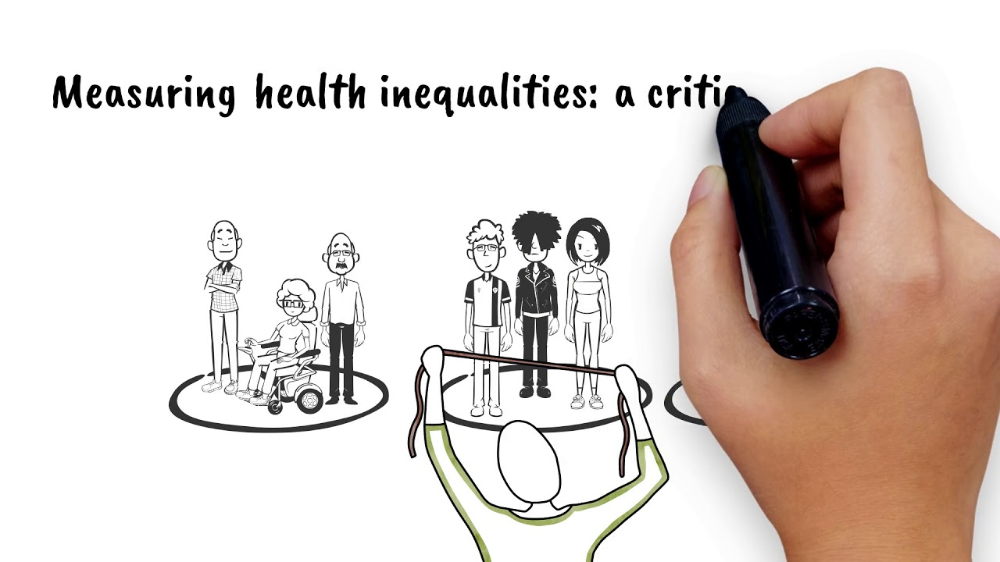

Health Equality
Equality is eliminating the differences among groups of people. These groups can be defined based on their gender, economical, demographical, or geographical status. Health inequalities concern health factors and access to the resources required to improve and maintain health. They also involve a failure to avoid or overcome inequalities that infringe on fairness and human rights norms. Enhancing health equities is vital because health is a basic human right. Some groups of people are more vulnerable than others when facing health issues. This vulnerability could be a result of some characteristics. Out of all, some common characteristics that increase the vulnerability of people against health issues are age, income, gender, and ethnicity. People who are vulnerable to some diseases (e.g., COVID19) are people ages 65 and greater. Also, children under 6 years old are socially vulnerable age groups so families with these children can be vulnerable to health issues. Low-income groups are more vulnerable than people who have high incomes and can stop working temporarily with less mental concern. Also, females and some ethnicities are among socially vulnerable groups whose health issues can compromise their life quality (e.g., loss of job).